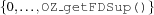

1.9 Auxiliary Interface Functions
OZ_gCollectTerm[function]void OZ_gCollectTerm(OZ_Term &t);During garbage collection this function updates the reference
tto a term on the heap. This is typically required when the member functiongCollect()of a propagator is invoked.OZ_gCollectBlock[function]void OZ_gCollectBlock(OZ_Term * frm, OZ_Term * to, const int n);During garbage collection this function updates the
nelememts infrmand stores them into.OZ_gCollectAllocBlock[function]OZ_Term * OZ_gCollectAllocBlock(int n, OZ_Term * frm);During garbage collection this function updates the
nelements infrmand returns a pointer to the updates. The updates are stored in freshly allocated heap memory.OZ_sCloneTerm[function]void OZ_sCloneTerm(OZ_Term &t);During cloning this function updates the reference
tto a term on the heap. This is typically required when the member functionsClone()of a propagator is invoked.OZ_sCloneBlock[function]void OZ_sCloneBlock(OZ_Term * frm, OZ_Term * to, const int n);During cloning this function updates the
nelememts infrmand stores them into.OZ_sCloneAllocBlock[function]OZ_Term * OZ_sCloneAllocBlock(int n, OZ_Term * frm);During cloning this function updates the
nelements infrmand returns a pointer to the updates. The updates are stored in freshly allocated heap memory.OZ_isPosSmallInt[function]OZ_Boolean OZ_isPosSmallInt(OZ_Term val);This function returns
OZ_TRUEifvaldenotes an integer contained in the finite set . Otherwise it returnsOZ_FALSE.OZ_hallocOzTerms[function]OZ_Term * OZ_hallocOzTerms(int n);This function allocates a block of heap memory for
nitems of typeOZ_Termand returns a pointer to the block.OZ_hallocChars[function]char * OZ_hallocChars(int n);This function allocates a block of heap memory for
nitems of typecharand returns a pointer to the block.OZ_hallocCInts[function]int * OZ_hallocCInts(int n);This function allocates a block of heap memory for
nitems of typeintand returns a pointer to the block.OZ_hfreeOzTerms[function]void OZ_hfreeOzTerms(OZ_Term * ts, int n);The function frees the heap memory allocated by
OZ_hallocOzTerms(). The first argumenttspoints to a memory block and the value ofnmust denote the correct size of the block.OZ_hfreeCInts[function]void OZ_hfreeCInts(int * is, int n);The function frees the heap memory allocated by
OZ_hallocCInts. The first argumentispoints to a memory block and the value ofnmust denote the correct size of the block.OZ_hfreeChars[function]void OZ_hfreeChars(char * is, int n);The function frees the heap memory allocated by
OZ_hallocChars(). The first argumentispoints to a memory block and the value ofnmust denote the correct size of the block.OZ_copyCInts[function]int * OZ_copyCInts(int n, int * is);Copies
nints fromisand returns the location of the copy. Ifnis equal to 0 it returns(int *) NULL.OZ_copyChars[function]char * OZ_copyChars(int n, char * cs);Copies
nchars fromcsand returns the location of the copy. Ifnis equal to 0 it returns(char *) NULL.OZ_findEqualVars[function]int * OZ_findEqualVars(int sz, OZ_Term * ts);The function expects
tsto be a pointer to anOZ_Termarray of sizesz. It returns an array ofints indicating variables which are equal. Suppose that the th field of the returned array holds one of the following values.
th field of the returned array holds one of the following values.value
explanation
-1
The term stored at that position is not a variable.
This is the first occurrence of a variable stored in the array at position
.
This is a repeated occurrence of a variable stored at position
 in the array.
in the array.The first occurrence can be found at position
. The returned
intarray is statically allocated, i. e. it is overridden on every invocation. For details see Section 1.7.1 of ``The Mozart Constraint Extensions Tutorial''.OZ_isEqualVars[function]OZ_Boolean OZ_isEqualVars(OZ_Term v1, OZ_Term v2);This function returns
OZ_TRUEifv1andv2refer to the same variable. Otherwise it returnsOZ_FALSE.OZ_findSingletons[function]int * OZ_findSingletons(int sz, OZ_Term * ts);The function expects
tsto be a pointer to anOZ_Termarray of sizeszwhich expects its elements to refer to finite domain variables. It returns an array ofints indicating variables which are singletons. Suppose that theth field of the returned array holds one of the following values.value
explanation
The term stored at that position is a singleton.
otherwise
The term stored at that position is still a finite domain variable.
The returned
intarray is statically allocated, i. e. it is overridden on every invocation.OZ_typeErrorCPI[function]OZ_Return OZ_typeErrorCPI(char * __typeString,
int pos,
char * comment);The return value of this function indicates the runtime system that an exception has to be raised. The message printed is composed using the
posth substring of__typeStringandcomment.OZ_getFDInf[function]int OZ_getFDInf(void);This function returns the value of the smallest element a finite domain which is represented by an instance of the class
OZ_FiniteDomaincan take. The value returned is 0.OZ_getFDSup[function]int OZ_getFDSup(void);This function returns the value of the largest element a finite domain which is represented by an instance of the class
OZ_FiniteDomaincan take. The value returned is .
. OZ_getFSetInf[function]int OZ_getFSetInf(void);This function returns the value of the smallest element a finite set value which is represented by an instance of the class
OZ_FSetValuecan take. The value returned is 0.OZ_getFSetSup[function]int OZ_getFSetSup(void);This function returns the value of the largest element a finite set value which is represented by an instance of the class
OZ_FSetValuecan take. The value returned is. OZ_fsetValue[function]OZ_Term OZ_fsetValue(OZ_FSetValue * fsv);This function converts the finite set value
fsvto the correspondingOZ_Term.OZ_fsetValueToC[function]OZ_FSetValue * OZ_fsetValueToC(OZ_Term fsv);This function converts
fsv, referring to a finite set value, to a pointer to the finite set value.OZ_vectorSize[function]int OZ_vectorSize(OZ_Term t);This function returns the size of a vector. In case
tis no vector it returns -1.type
returned value
Literal
The value returned is 0.
List
he value returned is the length of the list.
Tuple
The value returned is the arity of the tuple.
Record
The value returned is the number of features of the record.
OZ_getOzTermVector[function]OZ_Term * OZ_getOzTermVector(OZ_Term t, OZ_Term * v);This function expects
tto be a vector andvto be an array with minimalOZ_vectorSize(t)elements. It convertstto anOZ_Termarray and returns a pointer to the next free position in the arrayvafter convertingt. In casetis no vector the function returnsNULL.OZ_getCIntVector[function]int * OZ_getCIntVector(OZ_Term t, int * v);This function expects
tto be a vector of small integers andvto be an array with minimalOZ_vectorSize(t)elements. It convertstto anintarray and returns a pointer to the next free position in the arrayvafter convertingt. In casetis no vector the function returnsNULL.